LakeScope › WI
Geneva Lake today
Updated 2026-11-21 - Atlas Labs
Clear water, 51°F water, level steady, near normal, windy Saturday (15 mph S).
Water level
864.26 ft
USGS gauge 423525088260400 - 2026-11-21
7-day trend: steady (+0.00 ft). Compared with normal for this date: +0.0 ft (same weeks, 2016-2025).
Water clarity and algae
Clear water Last clear view: yesterday.
Surface temperature
51°F
seen from space on 2026-11-19

Ice
Open - 0% ice cover
Estimate from weather and satellite, not a measurement. Check the ice yourself before going on it.
Weather, next 3 days
| Day | Sky | High / low | Wind | Rain |
|---|---|---|---|---|
| Saturday | Sunny | 68 / 52°F | 15 mph S | 1% |
| Sunday | Light Rain | 54 / 29°F | 15 mph W | 94% |
| Monday | Sunny | 41 / 20°F | 10 mph NW | 0% |
Sunrise 06:52 - sunset 16:26 - Waxing gibbous. National Weather Service.
Get the LakeScope app: alerts and the 3-D view of Geneva Lake